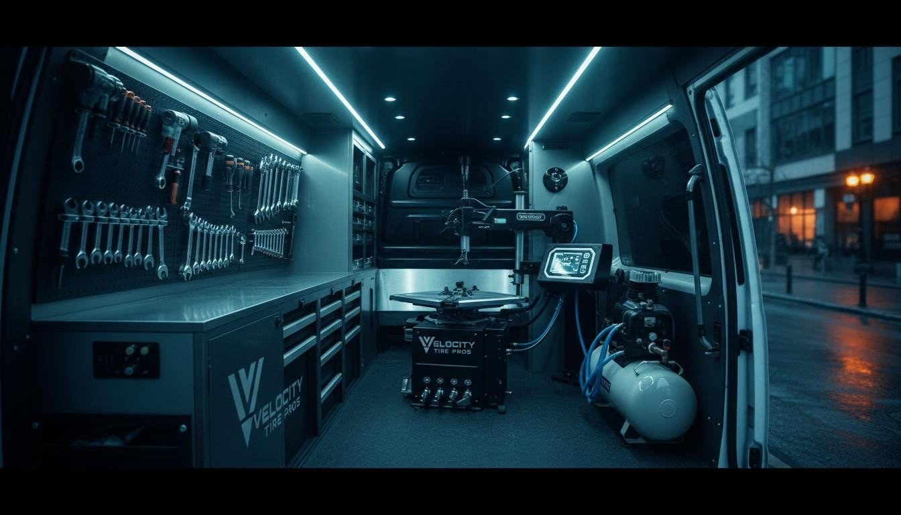

Comment se déroule un changement de pneu à domicile à Boulogne-Billancourt
Un changement de pneu avec DEPAN2PNEUS suit toujours le même déroulé, de votre appel jusqu'à votre départ. Pas de remorquage, pas d'attente en garage, pas de facture découverte après coup :
1Votre appel, la localisation et la dimension
Vous nous appelez au 07 61 06 96 38 ou vous nous écrivez sur WhatsApp. Nous identifions l'endroit exact où se trouve votre véhicule à Boulogne-Billancourt et la dimension du pneu concerné — inscrite sur son flanc, par exemple 205/55 R16. Si un pneu de remplacement doit être fourni, c'est à ce moment-là que nous le confirmons ensemble.
2Diagnostic à distance et tarif annoncé
À partir de vos indications, nous vous annonçons le tarif de l'intervention avant de partir : nos changements de pneu se situent entre 80 € et 150 € selon la prestation. Si nous fournissons le pneu, son prix vous est aussi communiqué à l'appel. Devis gratuit et sans engagement.
3Départ immédiat depuis notre base de Gonesse
Le technicien part de notre base du 5bis Rue des Frères Montgolfier à Gonesse, avec le pneu de remplacement et l'outillage complet. Comptez un délai moyen de 30 à 40 minutes pour nous rejoindre à Boulogne-Billancourt — de jour comme de nuit, week-end et jours fériés compris.

4Sécurisation et diagnostic sur place
À son arrivée, le technicien sécurise la zone, cale le véhicule et examine le pneu endommagé. Si, contrairement aux apparences, le pneu est réparable en toute sécurité — perforation simple sur la bande de roulement —, il vous le dit et procède à la réparation, moins chère. Notre diagnostic est gratuit et nous ne remplaçons jamais un pneu qui peut être réparé.
5Remplacement du pneu et équilibrage
La roue est démontée, l'ancien pneu retiré de la jante, et le pneu de remplacement monté puis équilibré électroniquement dans le camion-atelier. La valve est remplacée et la roue remontée avec un serrage au couple prescrit.

6Contrôles finaux et remise en circulation
Pressions réglées aux valeurs du constructeur, serrage vérifié, coup d'œil à l'état des autres roues : vous réglez le tarif annoncé et vous repartez au volant de votre véhicule, sans être passé par la case dépanneuse.